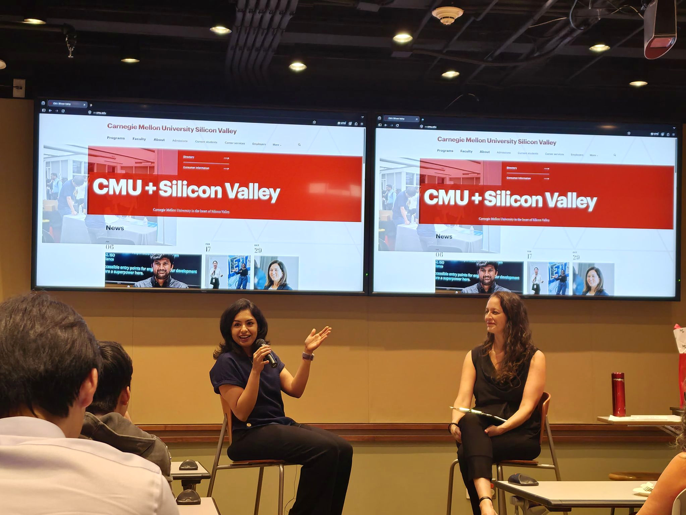

Be a builder. Develop judgment. Ask better questions.
What stayed with me from Arushi Grover’s INI alumni talk: genuine relationships, strong judgment, and communicating effectively with AI systems.

Technical skills can help us build opportunities. The right relationships can help us recognize and navigate them. That was one of my biggest takeaways from Arushi Grover’s INI alumni talk.
She spoke about the importance of building genuine connections with people who can offer honest advice, perspective, and support. Networking isn’t simply about accumulating contacts and seeking referrals—it is about building relationships with people who help us make better decisions and grow.
Three ideas for the AI era
I also asked her what skills big-tech companies value in the AI era, drawing on her nine years of experience at Meta. Her answer included three ideas that stayed with me:
- Be a builder.
- Develop strong judgment.
- Learn how to communicate effectively with AI systems.
Prompt engineering is part of that last skill, but the broader lesson was more valuable: knowing how to ask the right questions, evaluate an LLM’s response, and turn it into useful work is becoming increasingly important.
AI can accelerate execution. Judgment determines whether we are working on the right problem—and whether the result is actually good.

Thank you, Arushi, for sharing your experience and thoughtfully answering our questions. I’m also grateful to Carnegie Mellon University’s Information Networking Institute and Sari Smith for hosting the talk and bringing this valuable conversation to the CMU Silicon Valley campus.